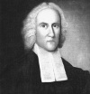

Zaman zaman dinleyicilerini gözyaşlarına boğan ateşli ve duygusal vaazları ile tanınan Jonathan Edwards (1703-1758) “Büyük Uyanış”ın önde gelen simalarından biriydi. Massachusetts’teki Northampton’da başlayan dini bir hareket olan “Büyük Uyanış,” 1730’larda on üç Amerikan kolonisini etkilemiştir.

Edwards, Connecticut’lı bir vaiz olan Timothy Edwards’ın (1668-1759) oğluydu. Dedesi ise Massachusetts’te Boston dışındaki en büyük kilisenin vaizi Northampton’lı Solomon Stoddard’dı (1643-1728). Edwards on üç yaşındayken Yale’e gitti. 1720 yılında bölüm birincisi olarak mezun oldu. 1727 yılında dedesinin asistanı olarak görevlendirildi.
Bu dönemde New England’daki pek çok din adamı bölgedeki ahlaki değerlerin zayıflamasından dolayı endişe duyuyordu. Kilise üyesi olmayan kolonicilerin sayısı giderek artıyordu. Aralarında Stoddard’ın da olduğu “Congregationalist” vaizler kiliseye katılım şartlarını kolaylaştıracak Yarım-Katılım adlı tartışmalı bir politika benimsemişti. Bütün amaçları kiliseye gelenlerin sayısını arttırmaktı.
Stoddard’ın 1728 yılındaki ölümünün ardında Northampton’ın rahibi olan Edwards, çarpıcı vaazlar vermeye başladı. 1733 yılında dini bir uyanış süreci başlattı ve New England’daki diğer kiliseleri ziyaret etti. 1741 yılında Connecticut’taki Enfield’de bir kilisede meşhur Sinners in the Hands of an Angry God (Öfkeli Bir Tanrının Elindeki Günahkarlar) adlı vaazını verdi. Günahkarları bekleyen cehennem azabını anlattığı sırada dinleyicileri feryatlar içinde kalmış ve içlerinden bazıları bayılmıştı.
Ne var ki Edwards’ın ve diğer Büyük Uyanış rahiplerinin canlı vaazları geleneksel “Congregationalistleri” rahatsız etti. Edwards, Yarım-Katılım’a karşı çıkarak kendi yandaşlarından bazılarını da kızdırmıştı. Sonunda 1750 yılında kiliseden ayrılmak zorunda kaldı.
Northampton’dan ayrıldıktan sonra 1751-1757 yıllarında Batı Massachusetts’teki Amerikan yerlileri arasında misyoner olarak çalıştı. 1758’te Princeton Üniversitesi başkanlığını kabul etti. Ertesi yıl elli beş yaşındayken öldü. Hayatını kaybetmesine bozuk bir çiçek aşısı neden olmuştu.
Ek Bilgiler
1- Yale Üniversitesi’nde bir öğrenci yurduna 1932 yılında “Jonathan Edwards College” adı verilmiştir.
2- Edwards 1727 yılında Yale’in kurucularından birinin kızı olan Sarah Pierpont ile evlendi. Çiftin on çocukları oldu.
3- Ailesinin kötü bir ünü vardı. Büyük halası kendi çocuklarından birini öldürmüştü. Büyük amcalarından biri de bir katildi. Torunlarından biri olan New York’lu siyasetçi Aaron Burr (1756–1836) ise Amerika Birleşik Devletleri kurucularından Alexander Hamilton’u (1755–1804) bir düelloda öldürmüştü.